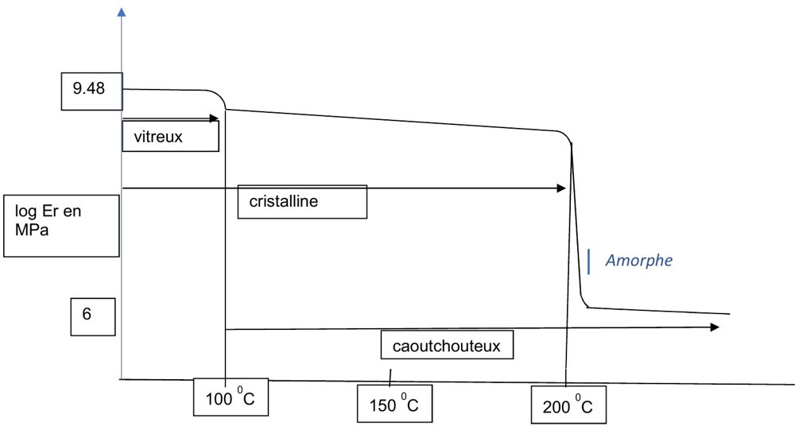
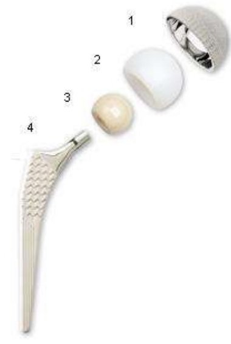
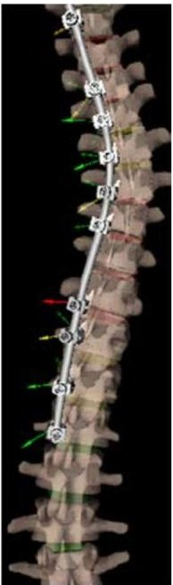
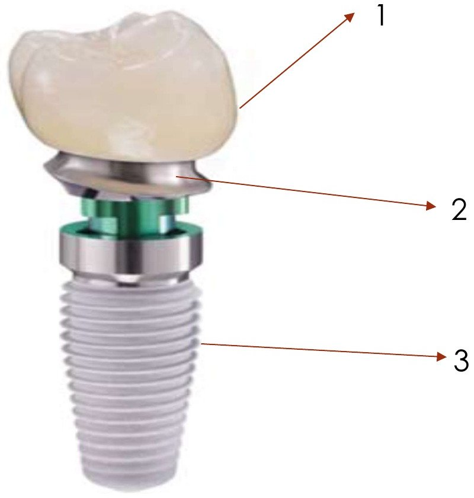

L'examen type corrigé
Lis l'énoncé, réponds dans ta tête, puis touche « Voir la réponse ». Préparer l'examen
L'examen de mi-session « Génie biomédical » du Pr. El Mekki Ennajimi (module Biomatériaux et Prothèses, 3e année GBM), avec son corrigé. Ton examen lui ressemblera. Pour chaque problème : l'énoncé, puis chaque question avec la réponse du corrigé et le pourquoi, pour que tu saches refaire une question du même genre. Quand le corrigé contient une erreur ou une coquille, c'est signalé par « Attention ».
Ce qu'il faut savoir pour cet examen
Ce que les douze problèmes demandent vraiment. Chaque point renvoie à une partie de la révision du contrôle.
- Lire une température par rapport à Tg et Tf : sous Tg vitreux, entre Tg et Tf la phase amorphe est caoutchouteuse et la phase cristalline tient, au-dessus de Tf tout fond (ou une pâte si la masse moléculaire est énorme).
- Tracer la courbe log Er en fonction de T pour un semi-cristallin, avec Tg, Tf et les zones vitreuse, caoutchouteuse, cristalline, amorphe.
- Refroidir vite ou lentement : trempe depuis le liquide → amorphe et transparent ; refroidissement lent ou palier entre Tg et Tf → cristallin, opaque.
- Calculer avec \(\rho = \rho_c X + \rho_a (1 - X)\) : densité, masse (m = ρV), ρc ou X inconnu.
- Classer un polymère à l'ambiante avec son Tg et son Tf : semi-cristallin, amorphe vitreux, caoutchouteux.
- Choisir un additif pour une propriété : plastifiant, stabilisant, ignifugeant, agent de germination, charge, agent gonflant, colorant.
- Repérer une contradiction dans Tg, Tf, X : Tg toujours inférieure à Tf, rien de solide si Tf < 25 °C, pas de cristaux au-dessus de Tf.
- Proposer un matériau et une nuance pour chaque pièce d'une prothèse (hanche, implant dentaire, tige de Harrington) et le justifier : densité, module, usure, artefact IRM, allergie.
- Choisir un alliage de titane dans un tableau (module, absence d'Al, de V, de Mo).
- Les biocéramiques : inertes ou résorbables, propriétés biologiques, frittage, structures de la zircone.
- Les normes : types de normes ASTM, étapes de mise sur le marché d'un dispositif médical, rôle de la FDA.
- Vrai ou faux sur tout le cours : chaque mot compte (« seulement », « quel que soit », « partout dans le monde »).
Problème 1 : vrai ou faux (5 points)
Barème : +0,5 par bonne réponse, 0 pour une réponse fausse, −0,5 pour une question sans réponse. Il vaut donc mieux répondre à tout.
Un polymère semi-cristallin est transparent.
Voir la réponse
Faux.
Pourquoi : les cristaux diffusent la lumière. Un semi-cristallin est translucide ou opaque. C'est l'amorphe qui peut être transparent.
Un polymère amorphe a une température de transition vitreuse légèrement différente de sa température de fusion.
Voir la réponse
Faux.
Pourquoi : un amorphe n'a pas de cristaux, donc pas de Tf. Il n'a qu'une Tg (voir le tableau : PVC, PMMA, PS n'ont pas de Tf).
L'oxygène est un élément chimique allotropique.
Voir la réponse
Vrai.
Pourquoi : l'allotropie, c'est exister sous plusieurs structures. L'oxygène existe en O₂ et en ozone O₃ (comme le carbone : diamant, graphite, carbone vitreux).
Une valve mécanique pour la chirurgie valvulaire peut être fabriquée en carbone pyrolytique synthétique.
Voir la réponse
Le corrigé dit : faux.
Attention : le cours présente bien des valves mécaniques en carbone pyrolytique. Le corrigé marque pourtant faux, sans explication : le piège porte sans doute sur le mot « synthétique ». Pose la question au professeur si tu peux.
Une valve mécanique est fabriquée à partir de carbone vitreux appartenant à la famille du graphite.
Voir la réponse
Faux.
Pourquoi : le carbone vitreux est non cristallin, le graphite est cristallin : ce n'est pas la même famille. Et les valves sont en carbone pyrolytique.
L'acier inoxydable 316L peut contenir 17 % de Cr et 0,7 % de C.
Voir la réponse
Faux.
Pourquoi : 17 % de Cr est possible (17 à 20 %), mais le « L » veut dire carbone faible : 0,03 % au plus, pas 0,7 %.
L'acier inoxydable 316L peut subir une corrosion en milieu biologique.
Voir la réponse
Vrai.
Pourquoi : sous fortes contraintes et manque d'oxygène (sous les vis d'une plaque), le 316L corrode.
L'oxyde d'aluminium est monocristallin.
Voir la réponse
Vrai, selon le corrigé.
L'oxyde de zirconium est monocristallin.
Voir la réponse
Faux.
Pourquoi : la zircone est polycristalline (par exemple le Y-TZP, « polycrystal »), avec trois structures possibles.
Une biocéramique est un matériau dont les liaisons entre atomes sont de type ionique seulement.
Voir la réponse
Faux.
Pourquoi : les liaisons d'une céramique sont ioniques et covalentes. Le mot « seulement » rend la phrase fausse.
Une biocéramique résorbable peut remplacer un os fracturé sans interaction avec l'hôte.
Voir la réponse
Faux.
Pourquoi : une céramique résorbable interagit forcément avec l'hôte : elle se dissout et l'os la remplace.
Il est recommandé d'utiliser l'acier 316L comme prothèse permanente seulement.
Voir la réponse
Faux.
Pourquoi : c'est l'inverse, le 316L est réservé aux implants temporaires (plaques, vis, clous), parce qu'il peut corroder.
Un polymère est recommandé pour une prothèse vasculaire quel que soit le diamètre du vaisseau.
Voir la réponse
Faux.
Pourquoi : « quel que soit » rend la phrase fausse : aucun matériau ne convient à tous les cas. Repère ces mots absolus (seulement, quel que soit, partout), ils annoncent souvent un faux.
Un élastomère peut se déformer élastiquement et plastiquement.
Voir la réponse
Faux.
Pourquoi : l'élastomère ne se déforme qu'élastiquement. C'est le plastomère qui ajoute une déformation plastique.
L'oxyde de zirconium ZrO₂ est une céramique résistante mécaniquement et biodégradable.
Voir la réponse
Faux.
Pourquoi : résistante, oui, mais la zircone est bio-inerte, pas biodégradable.
La silicone est un matériau dont le polymère de base est du type organique seulement.
Voir la réponse
Faux.
Pourquoi : la silicone est un élastomère minéral : sa chaîne est faite de silicium et d'oxygène, pas de carbone.
Le PMMA a une résistance au choc équivalente ou supérieure à celle du PC.
Voir la réponse
Faux.
Pourquoi : le PMMA est amorphe et fragile à l'ambiante (Tg = 105 °C). Le cours décrit le polycarbonate comme robuste.
Le CrCo est plus dense que les polymères et moins dense que l'alliage de titane.
Voir la réponse
Faux.
Pourquoi : CoCrMo 8,3 g/cm³, titane 4,5 g/cm³ : le CrCo est plus dense que le titane.
La projection plasma est un traitement de surface qui peut être appliqué à un polyéthylène UHMWPE.
Voir la réponse
Faux.
Pourquoi : la projection plasma dépose un revêtement à très haute température, sur des implants métalliques. Un polyéthylène fondrait.
La FDA est un organisme gouvernemental qui peut autoriser ou interdire un dispositif médical partout dans le monde.
Voir la réponse
Faux.
Pourquoi : la FDA est américaine, elle n'autorise que le marché des États-Unis. En Europe, c'est le marquage CE.
Problème 2 : le polymère et la plaque moulée (10 points)
Un polymère de masse moléculaire extrêmement élevée, Tg = 100 °C, Tf = 200 °C, ρa = 1 g/cm³, ρc = 1,2 g/cm³. Une plaque de 20 × 10 × 0,1 cm est moulée par injection ; à 25 °C, X = 50 %.
La méthode : place chaque température sur l'axe, par rapport à Tg = 100 °C et Tf = 200 °C.

1.1 À 90 °C, la plaque est à l'état : solide, semi-cristallin, amorphe, vitreux ou caoutchouc ?
Voir la réponse
Semi-cristallin et vitreux.
Pourquoi : 90 °C < Tg = 100 °C, donc la phase amorphe est vitreuse (rigide). La phase cristalline (X = 50 %) est toujours là.
1.2 À 220 °C, le matériau est-il liquide comme l'eau, visqueux comme l'huile, ou caoutchouteux comme une pâte ?
Voir la réponse
Caoutchouteux comme une pâte.
Pourquoi : 220 °C > Tf, les cristaux ont fondu. Mais la masse moléculaire est extrêmement élevée : le plateau caoutchouteux se prolonge et le polymère ne devient pas liquide.
1.3 À l'ambiante, le module est 3 GPa. À 150 °C, il est plus faible. Pourquoi ?
Voir la réponse
La mobilité des chaînes de la phase amorphe.
Pourquoi : 150 °C est au-dessus de Tg : la phase amorphe passe à l'état caoutchouteux, ses chaînes bougent, le module baisse. La phase cristalline, elle, tient jusqu'à 200 °C.
Attention : le corrigé écrit « d) » devant cette réponse, mais dans l'énoncé c'est la proposition c.
1.4 On chauffe à 250 °C puis on refroidit instantanément à 25 °C. Le matériau est ?
Voir la réponse
Amorphe et transparent.
Pourquoi : au-dessus de Tf tout est fondu. Une trempe ne laisse pas aux chaînes le temps de se ranger : elles sont figées en désordre, donc amorphe, et sans cristaux pour diffuser la lumière, donc transparent.
1.5 Pour obtenir 50 % de cristallinité, à quelle température la vitesse de cristallisation est-elle maximale : 130, 100, 25 ou 150 °C ?
Voir la réponse
150 °C.
Pourquoi : on ne cristallise qu'entre Tg (les chaînes doivent bouger) et Tf (les cristaux ne doivent pas fondre). La vitesse est la plus grande entre les deux, ici au milieu : 150 °C.
1.6 Trace la courbe du module de relaxation en fonction de T avec Tg, Tf et les zones.
Voir la réponse
Axe vertical log Er, axe horizontal T.
Plateau haut jusqu'à Tg = 100 °C : zone vitreuse.
Petite chute à Tg, puis un plateau encore élevé jusqu'à Tf = 200 °C : la phase amorphe est caoutchouteuse, la phase cristalline tient (X = 50 %).
Forte chute à Tf : les cristaux fondent, tout devient amorphe.
Masse moléculaire extrême : un plateau caoutchouteux bas après Tf, pas de liquide.
b. Calcule la masse de la pièce à 80 °C.
Voir la réponse
\(\rho = \rho_c X + \rho_a (1 - X)\)
\(\rho = 1{,}2 \times 0{,}5 + 1 \times 0{,}5 = 1{,}1\) g/cm³
\(V = 20 \times 10 \times 0{,}1 = 20\) cm³
\(m = \rho V = 1{,}1 \times 20 = 22\) g
Attention : le corrigé écrit X = (ρ − ρa)/(ρ − ρc), c'est une coquille. La bonne formule est X = (ρ − ρa)/(ρc − ρa).
c. La plaque est chauffée à 150 °C puis refroidie instantanément à l'ambiante. Quel est son volume ?
Voir la réponse
20 cm³, il ne change pas.
Pourquoi : 150 °C est sous Tf = 200 °C. Les cristaux n'ont pas fondu, X reste 50 %, la densité reste 1,1 g/cm³ et le volume 20 cm³. La trempe ne change quelque chose que si on a dépassé Tf.
Problème 3 : états à l'ambiante et additifs (10 points)
La règle pour l'état à l'ambiante (25 °C) :
- Tf > 25 °C et Tg < 25 °C : semi-cristallin, avec une phase amorphe caoutchouteuse.
- pas de Tf et Tg > 25 °C : amorphe vitreux.
- Tg < 25 °C et pas de cristaux à l'ambiante : caoutchouteux.
Q1. Donne l'état à l'ambiante de PP, PE, POM, PVC, PMMA, PS, PdMS et PB.
Voir la réponse
PP (−18 / 170), PE (−120 / 140), POM (−50 / 181) : semi-cristallins (phase amorphe caoutchouteuse).
PVC (90), PMMA (105), PS (100) : amorphes vitreux.
PdMS (−123 / −80) : amorphe caoutchouteux (Tf sous l'ambiante : pas de cristaux à 25 °C).
PB (−73 / 28) : semi-cristallin caoutchouteux (Tf = 28 °C, juste au-dessus de l'ambiante).
a) Avoir une couleur transparente : quel additif ?
Voir la réponse
Colorants en produits organiques.
b) Le matériau doit devenir rigide à −10 °C au lieu de 0 °C sans additif : quel additif ?
Voir la réponse
Un plastifiant.
Pourquoi : la « température de rigidité », c'est Tg. Le plastifiant écarte les chaînes et abaisse Tg.
c) Éviter la décomposition ou le vieillissement prématuré en service : quel additif ?
Voir la réponse
Stabilisants, antioxydants anti-UV.
d) Éviter que le matériau prenne feu ou dégage des odeurs nocives : quel additif ?
Voir la réponse
Ignifugeants.
e) Améliorer la cadence de fabrication en plasturgie : quel additif ?
Voir la réponse
Agents de germination.
Pourquoi : ils facilitent et accélèrent la cristallisation : la pièce se solidifie plus vite dans le moule, on démoule plus tôt.
f) Augmenter la rigidité et diminuer le prix de revient : quel additif ?
Voir la réponse
Charges et renforts.
g) Augmenter son volume : quel additif ?
Voir la réponse
Agents gonflants.
Problème 4 : repérer les contradictions (5 points)
Des polymères purs de masse moléculaire très élevée, tous cristallisables, filés en fibres : le filage oriente les chaînes parallèlement à l'axe de la fibre. On donne Tg, Tf et X à 25 °C. Il faut dire lesquels peuvent exister (+) et lesquels sont contradictoires (−).
Les règles qui se lisent dans le corrigé :
- Tg < Tf toujours : la phase amorphe se ramollit avant que les cristaux fondent.
- Tf > 25 °C : sinon le polymère est fondu à l'ambiante et ne peut pas former une fibre, ni avoir des cristaux.
- X > 0 : un polymère cristallisable filé, aux chaînes orientées, est partiellement cristallin ; X = 0 est marqué contradictoire à chaque fois (règle déduite du corrigé : l'orientation range les chaînes).
| Matériau | Tg (°C) | Tf (°C) | X | Réponse | Pourquoi |
|---|---|---|---|---|---|
| A | −120 | −75 | 0 | − | Tf < 25 °C : fondu à l'ambiante |
| B | −120 | −75 | 0,1 | − | Tf < 25 °C : pas de cristaux possibles |
| C | 80 | 175 | 0 | − | fibre orientée avec X = 0 |
| D | 175 | 175 | 0 | − | Tg = Tf impossible |
| E | −20 | 175 | 0,9 | + | Tg < 25 °C < Tf, cristallin |
| F | 175 | −80 | 0,9 | − | Tg > Tf impossible |
| G | 175 | 275 | 0 | − | fibre orientée avec X = 0 |
| H | 50 | 275 | 0,9 | + | cohérent |
| I | 175 | 275 | 0,9 | + | cohérent |
| J | 75 | 275 | 0 | − | fibre orientée avec X = 0 |
Problème 5 : la densité du nylon cristallin (5 points)
Un nylon avec X = 0,33 a une densité de 1,11 g/cm³ ; la phase amorphe a 1,07 g/cm³. Densité du nylon 100 % cristallin ?
Voir la réponse
\(\rho = \rho_c X + \rho_a (1 - X)\), donc \(\rho_c = \dfrac{\rho - \rho_a (1 - X)}{X}\)
\(\rho_c = \dfrac{1{,}11 - 1{,}07 \times 0{,}67}{0{,}33} = \dfrac{0{,}393}{0{,}33}\)
\(\rho_c \approx 1{,}19\) g/cm³
Vérification : ρc doit être plus grand que ρ, lui-même plus grand que ρa (1,19 > 1,11 > 1,07).
Problème 6 : les normes ASTM (5 points)
Ce sujet n'est que dans le corrigé, pas dans le cours reçu : apprends-le tel quel. L'ASTM, standard international pour les tests des matériaux, propose des types de normes, chacun découpé en sections. Les réponses du corrigé :
| Ce que ça permet | Réponse | Type ou section |
|---|---|---|
| déterminer les propriétés mécaniques, caractériser le matériau | méthode de tests | type |
| déterminer les conditions à remplir par un matériau, produit, système ou service | spécifications | type |
| diviser matériaux, produits, systèmes en groupes de caractéristiques similaires (origine, composition, propriétés, utilisation) | classification | type |
| définir les termes, symboles, abréviations, acronymes | terminologie | section |
| définir les mots qui ont un sens plus restreint dans la norme | terminologie | section |
| décrire l'appareil et l'équipement requis pour le test | appareil | section |
| calculer les résultats, avec équations et chiffres significatifs | calcul des résultats | section |
| donner les informations obligatoires pour appliquer la norme | annexes | section |
La liste complète proposée : spécifications, champ d'application, documents de référence, méthode de tests, pratique, guide, terminologie, classification, importance et utilisation, appareil, procédure, calcul des résultats, rapport, précision et biais, annexes et appendices.
Problème 7 : du développement à la mise sur le marché (5 points)
Également absent du cours reçu. Les quatre exigences, dans l'ordre du corrigé, avec leur processus normatif :
- Tests de sécurité : le produit n'interfère pas avec l'environnement médical et évite les risques inacceptables pour le patient → test de dispositifs médicaux.
- Évaluation des risques par le fabricant, soumise à un laboratoire d'essai (document de gestion des risques) → évaluation pour l'approbation mondiale.
- Exigences générales de test des dispositifs électroniques, famille de normes CEI 60601 → certification des dispositifs médicaux.
- Sécurité électrique, compatibilité électromagnétique (CEM), RFID, soumission FDA (60601, ISO 14708, réglementations internationales) → accès au marché mondial.
Problème 8 : la prothèse totale de hanche (8 points)

Q1. Quelles sont les grandes classes de matériaux synthétiques qui remplacent un tissu, un organe ou une fonction ?
Voir la réponse
Métaux et alliages.
Céramiques.
Polymères (plastiques).
Q2. Quelles nuances pour les pièces 1, 2, 3, 4 ? Justifie.
Voir la réponse
1 cupule : TiAl6V4, CoNiCrMo, ou PMMA coulé.
2 insert : alumine Al₂O₃, ou polyéthylène UHMWPE (PE-HD).
3 tête : alumine, zircone Y-TZP (tétragonale), 316L, ou CoNiCrMo.
4 tige : TA6V (faible densité, résistance à la corrosion, bonnes propriétés mécaniques) ou CoNiCrMo (grandes articulations porteuses).
Q3. Quelles nuances pour un patient allergique au nickel ?
Voir la réponse
Le corrigé propose : 316L, TiAl6V4, zircone, alumine, UHMWPE.
Attention : le 316L contient 12 à 14 % de nickel (composition du cours) et le CoNiCrMo aussi. Pour un allergique au nickel, garde le titane TiAl6V4, les céramiques (zircone, alumine) et le polyéthylène. Si tu écris le 316L comme le corrigé, ajoute au moins cette remarque.
Q4. Le chirurgien veut la prothèse la moins lourde, la moins rigide, sans artefact et qui s'use le moins. Que proposes-tu ?
Voir la réponse
Le moins lourd : TiAl6V4 (4,5 g/cm³).
Le moins rigide : le polyéthylène UHMWPE.
Sans artefact IRM : la zircone Y-TZP et le UHMWPE (les métaux comme le CoCr et l'inox donnent des artefacts).
Ce qui s'use le moins : l'alumine.
La combinaison du corrigé : TiAl6V4 + zircone Y-TZP + UHMWPE.
Problème 9 : la tige de Harrington (5 points)

Q1. Quelle classe et quelle nuance pour une tige de Harrington chez un patient de 22 ans ? Caractéristiques et avantages ?
Voir la réponse
Classe : matériau métallique.
Nuance 1 : alliage de titane TiAl6V4 (titane expansible) : léger, résistant, biocompatible, module plus proche de l'os.
Nuance 2 : alliage à mémoire de forme Nitinol (AMF) : il reprend sa forme et exerce un effort de correction continu.
Q2. Bio-inerte ou biodégradable ? Pourquoi ?
Voir la réponse
Bio-inerte, non résorbable.
Pourquoi : la tige doit assurer la correction pendant des années sans se dégrader.
Problème 10 : l'implant dentaire (10 points)

Q1. Quelles sont les trois pièces de ce dispositif ?
Voir la réponse
1 la couronne.
2 le pilier.
3 l'implant (ancrage dans l'os).
Q2. Quel biomatériau pour chaque pièce ? Classe, nuance et densité.
Voir la réponse
Couronne : céramique, zircone ZrO₂ (céramo-céramique ou zircone complète, densité ≈ 6), ou céramo-métallique (CrCo recouvert de céramique, densité du CoCr 8,3).
Pilier : métal, alliage de titane TiAl6V4 (densité 4,4–4,5).
Implant : métal, TiAl6V4 (densité 4,4–4,5).
Les densités ne sont pas dans le corrigé : elles viennent des tableaux du cours (zircone 5,95–6,05, Ti 4,5, CoCrMo 8,3).
Q3. Quelle pièce doit subir un traitement de surface pour l'intégration osseuse ?
Voir la réponse
L'implant (pièce 3) : c'est lui qui est dans l'os et doit s'ostéointégrer.
Problème 11 : choisir un alliage de titane (10 points)
| Alliage | Module (GPa) | Résistance à la traction (MPa) | Allongement (%) |
|---|---|---|---|
| Ti6Al7Nb | 114 | 869–1086 | 7–16 |
| Ti5Al2,5Fe | 107–112 | 860 | 8 |
| Ti15Mo5Zr3Al | 80 | 882–1177 | 15–20 |
| Ti12Mo5Zr5Sn | < 75 | 1010 | 17,8 |
| Ti30Nb | < 75 | 700 | 20 |
| Ti30Ta | < 75 | 740 | 28 |
1. Électrodes de pacemaker avec une bonne qualité du signal ?
Voir la réponse
Ti-5Al-2,5Fe (le cours l'associe aux électrodes de pacemakers).
2. Implant orthopédique au comportement élastique proche de l'os ?
Voir la réponse
Un module faible : Ti12Mo5Zr5Sn, Ti13Nb13Zr, Ti30Nb ou Ti30Ta (module < 75 GPa).
3. Implant orthopédique très résistant, module faible, pour un patient qui ne tolère ni l'aluminium ni le vanadium ?
Voir la réponse
Ti12Mo5Zr5Sn : 1010 MPa et module < 75 GPa, sans Al ni V.
Attention : le corrigé écrit « TiL2Mo5Zr5Sn », c'est une coquille pour Ti12Mo5Zr5Sn.
4. Un implant pour un patient allergique au molybdène ?
Voir la réponse
TiAl6V4 : il ne contient pas de molybdène.
Problème 11 bis : les biocéramiques (12 points)
Q1. Cite 3 biocéramiques bio-inertes.
Voir la réponse
Zircone ZrO₂ (3Y-TZP), alumine Al₂O₃, carbure métallique, carbone pyrolytique.
Q2. Cite 2 biocéramiques biodégradables.
Voir la réponse
L'hydroxyapatite (HAP) Ca₁₀(PO₄)₆(OH)₂.
Le phosphate tricalcique Ca₃(PO₄)₂ (whitlockite).
Un composite des deux.
Q3. Différence entre biocéramique résorbable et non résorbable ?
Voir la réponse
Résorbable = biodégradable : elle se dissout dans le corps et l'os la remplace.
Non résorbable = bio-inerte : elle reste en place sans réagir.
Q4. Cite 3 propriétés biologiques qui font d'une biocéramique bio-inerte un candidat pour la prothèse.
Voir la réponse
Non toxique, non cancérigène, non allergique.
Aussi : non inflammatoire, biocompatible, biofonctionnelle.
Q5. Comment s'appelle le procédé qui fabrique une pièce d'alumine ou de zircone à partir d'une poudre de 0,5 µm ?
Voir la réponse
Le frittage : densification à haute température (et sous pression).
Q6. Classe par inertie chimique l'or, la zircone, le Cr-Co, le TiAl6V4 et le 316L.
Voir la réponse
Réponse du corrigé : l'or, ZrO₂, TiAl6V4, CrCo, 316L.
Attention : cette liste va du plus inerte (l'or) au moins inerte (le 316L, qui peut corroder). Écris-la dans cet ordre en précisant le sens.
Q7. La zircone stabilisée à l'yttrium a une structure triphasique. a) Quelles phases ? b) Laquelle pour les prothèses ?
Voir la réponse
a) Dans le cours : cubique, tétragonale (quadratique), monoclinique. Le corrigé, lui, cite les ions Zr⁴⁺, O²⁻ et Y³⁺ : donne les trois structures, et cite les ions en plus.
b) La forme tétragonale (quadratique).
Q8. Pour la PTH (cupule, insert, tête, tige) : classes, nuances, et traitements ?
Voir la réponse
Cupule : métal (CrCo, TiAl6V4) ou polymère (PMMA).
Insert : polymère (PEHD) ou céramique (alumine, zircone).
Tête : céramique (ZrO₂, Al₂O₃) ou métal (316L).
Tige : métal (CoCr, 316L, TiAl6V4).
Traitement de surface pour l'ostéointégration : la tige et la cupule, les deux pièces au contact de l'os.
Problème 12 : choisir le couple de frottement (10 points)
Les six fonctions d'une prothèse de hanche : support mécanique, tribologique (frottement), ancrage osseux, résistance à la corrosion, densité, corrosion galvanique. Matériaux possibles : 316L, UHMWPE, Al₂O₃, CoCr, ZrO₂.
Q1. Quel couple insert / tête pour résister aux chocs et à l'usure ? Justifie.
Voir la réponse
Le couple zircone / polyéthylène HD, ou alumine / polyéthylène HD.
Résistance aux chocs : résilience et résistance à la fatigue élevées (justification du corrigé).
Résistance à l'usure : coefficient de frottement bas, usure faible (zircone / PEhd : 0,01–0,04 et moins de 10 mg/an, contre 20 mg/an pour CoCr / PEhd).
Les annexes de l'examen (limites élastiques, modules de Young, densités, couples de frottement, tableau des métaux) sont les mêmes que dans la révision du contrôle, partie métaux : sache les lire, elles sont données le jour de l'examen.